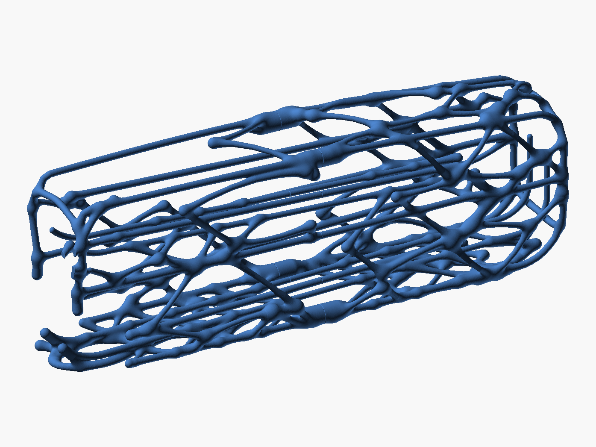
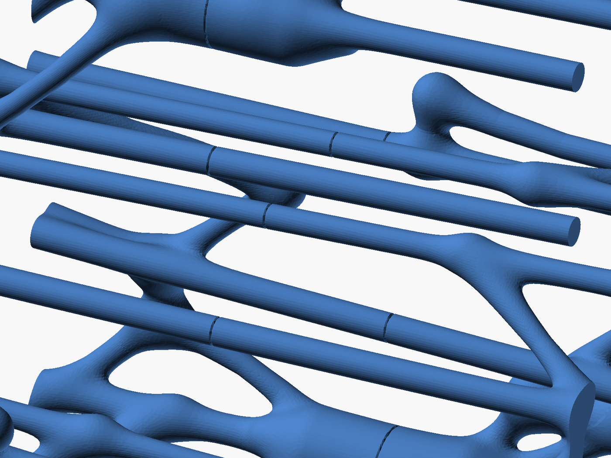
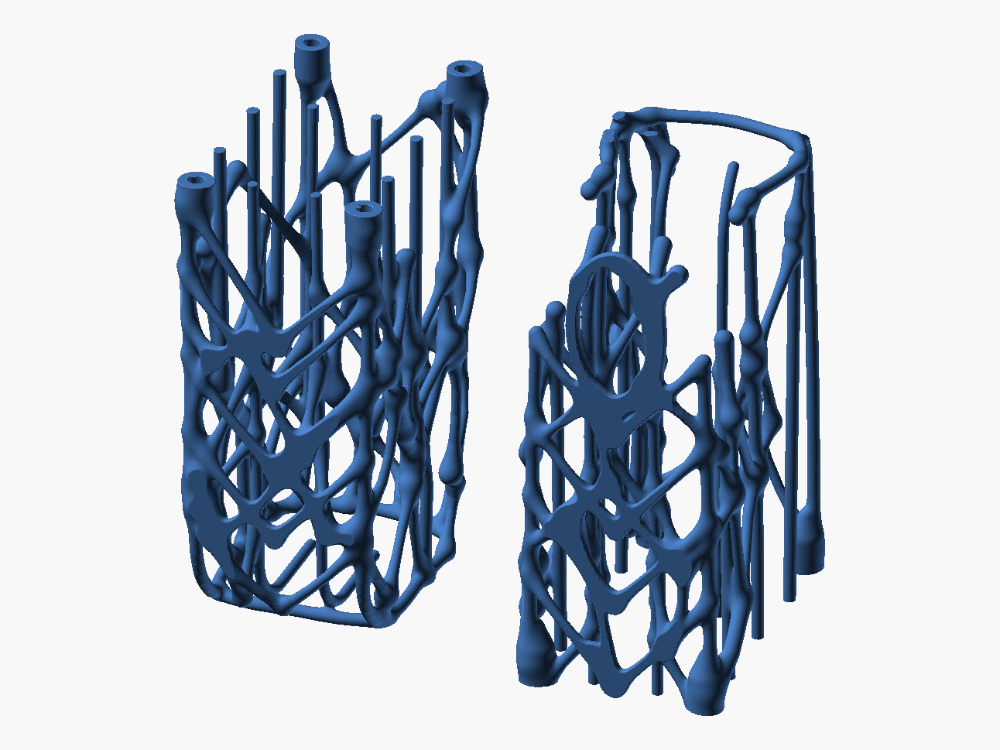
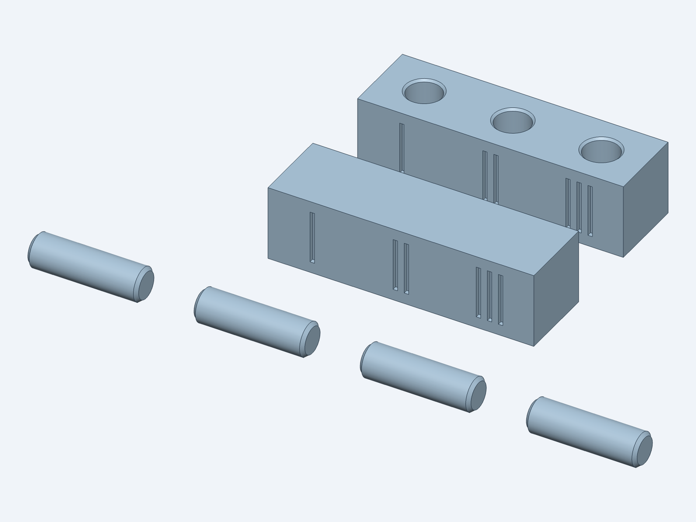

Bigger Bio Egg Dispenser
A 16-egg remix of pymata's Bio Egg Dispenser, sized to a 16 in fridge shelf. Load eggs at the top front; they roll back, turn down, and roll forward to where you take them out. 389 mm long, 95 mm wide and 145 mm tall.
Drag to turn it, scroll or pinch to zoom.

Two levels
Both levels slope down 2.2°. Eggs load onto the upper rails at the front, roll to the back, drop through the turn onto the lower level, and roll forward to the exit cradle.

Four pins, 14 contacts
It prints as two halves. Four D-shaped pins press into bosses at the seam; only the rails, side guides and two waist lines cross it, leaving 14 small contacts. No glue, so it comes apart to wash.

Two prints
The back and front halves print standing on their seam or back face, each about 195 mm tall. About 8.8 h and 150 g for the back half, 8.2 h and 133 g for the front on an X2D.

Fit coupon first
A small test of two seam pieces and four pins. Try the 0.03, 0.05 and 0.08 mm fits and use the one that grips before printing a half.
Printing and files
Start with egg_dispenser_fit_coupon_plate.3mf. Then print the halves: egg_dispenser_back_plate.3mf (four pins plus two spares ride beside it) and egg_dispenser_front_plate.3mf.
Each is a Bambu Studio project for the X2D: Bambu PLA Matte, 0.20 mm layers, 3 walls, 10% gyroid, 8 mm brim, no supports. Open one, pick your AMS slot, slice and print.
No STEP: the lattice is generated as a mesh, so the 3MFs carry the exact geometry. Source and design notes are in the repository; how the lattice is grown is explained here.
The cage is generated in the original's style: blending Voronoi struts around rails and continuous side guides. The side guides are 64 mm apart to keep Large and XL eggs crosswise, and the rails are the original's 4.3 mm. It holds 16 eggs at a 47 mm pitch and leaves 17 mm of the 406 mm shelf free.